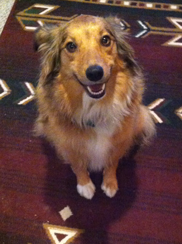

Who's Arya?
Little Arya was born in November 2013. She has lived in her forever home for 7 years. Arya has a younger sister named Luna, but this blog isn't about Luna. It's about Arya, so we are going to continue to talk about Arya. She is the guard dog of her forever home and takes her role very seriously. Sometimes her family tells her she's not a guard dog and should calm down. Good one family. What are you gonna do? Guard yourselves? With what?
Arya's days are filled with hourly walks to patrol the neighborhood and make sure no one is trying to break into her forever home. She has a bed next to the front of the house which allows her make sure no one breaks into her forever home while she lounges. Sometimes she sleeps. Sometimes she eats treats. However, Arya can't keep her guard down too long. Danger is always around her and she has to make sure everyone in her forever home is safe and sound.
Want some Arya fun facts?
- When Arya was little, she only had two colors in her coat: brown and blonde. As she got older, Arya's coat became tri-color with black, brown, and blonde fur.
- Arya was born without a tail. When she gets excited, her little stub wiggles. When she gets really excited, her whole body wiggles.
- Arya's original name was Tristin. When she was adopted into her forever home, she was renamed after that cool chick from Game of Thrones.